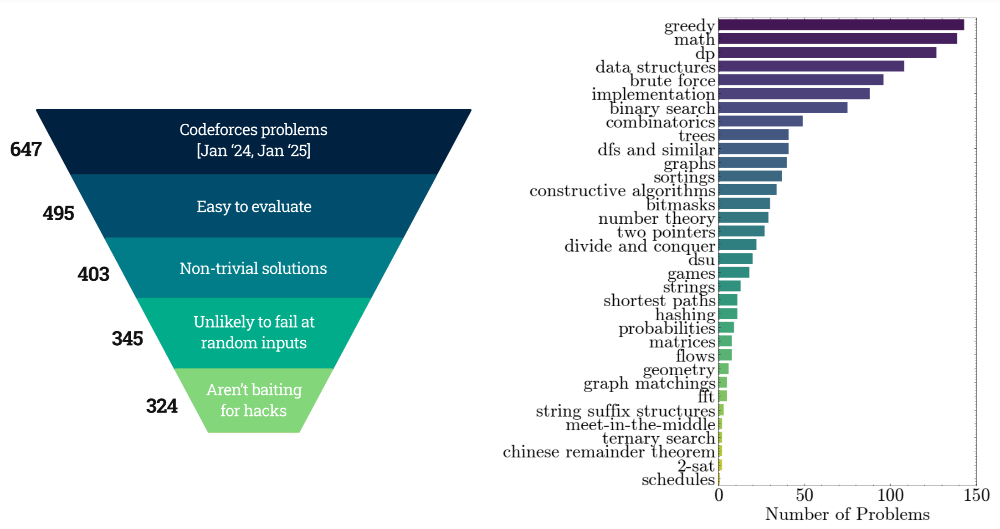

Can Language Models Falsify?
Evaluating Algorithmic Reasoning with Counterexample Creation
1 IIIT Hyderabad, 2 ELLIS Institute Tübingen, 3 Max Planck Institute for Intelligent Systems, 4 Tübingen AI Center, 5 University of Tübingen. ○ denotes equal supervision.
Abstract
There is growing excitement about the potential of Language Models (LMs) to accelerate scientific discovery. Falsifying hypotheses is key to scientific progress, as it allows claims to be iteratively refined over time. This process requires significant researcher effort, reasoning, and ingenuity. Yet current benchmarks for LMs predominantly assess their ability to generate solutions rather than challenge them. We advocate for developing benchmarks that evaluate this inverse capability — creating counterexamples for subtly incorrect solutions. To demonstrate this approach, we start with the domain of algorithmic problem solving, where counterexamples can be evaluated automatically using code execution. Specifically, we introduce REFUTE, a dynamically updating benchmark that includes recent problems and incorrect submissions from programming competitions, where human experts successfully identified counterexamples. Our analysis finds that the best reasoning agents, even OpenAI o3-mini (high) with code execution feedback, can create counterexamples for only < 9% of incorrect solutions in REFUTE, even though ratings indicate its ability to solve up to 48% of these problems from scratch. We hope our work spurs progress in evaluating and enhancing LMs’ ability to falsify incorrect solutions — a capability that is crucial for both accelerating research and making models self-improve through reliable reflective reasoning.
REFUTE Benchmark
REFUTE (Refuting Erroneous Findings Using Targeted Examples) evaluates whether language models can reason about when code might fail. Specifically, given a problem statement, the input format, and an incorrect code, the task is to find a valid input on which the code fails to produce the desired output. We source these samples from the popular programming competition platform Codeforces, which has been the target of several recent solution generation benchmarks.
- Allows arbitrary algorithmic generation of novel counterexamples: We provide the language model a problem statement and incorrect solution, and ask it to output a code that, when executed, outputs a counterexample input. This helps the LM generate counterexamples with varying complexity, ranging from a hard-coded input to computationally complex functions. We score the counterexample as a success if it satisfies the input constraints while causing the buggy and correct codes to produce different outputs.
- Avoids Search and Training Data Leakage: Codeforces does not publically reveal the full test cases that broke an incorrect submission on non-trivial (small) cases, so models cannot directly find counterexamples on the internet. Further, to prevent indirect leakage from discussions, we will dynamically update the benchmark with new contests
- Diversity and Metadata: Our benchmark spans 34 fundamental topics in algorithms as tagged by Codeforces (e.g. Greedy, Dynamic Programming, Graphs, etc.), shown in Figure 2. The problems range in difficulty from an Elo rating of 1200 to 3500, while the incorrect submissions are authored by programmers with expertise ranging from Elo 700 to 3800. We provide all these meta-data annotations for each sample in our benchmark.
Results
We tested prompting and agentic strategies with code-execution feedback across frontier models. We also estimate the number of correct solutions they can generate from scratch based on their officially reported Codeforces ratings. w/ Correct denotes their ability to find counterexamples to incorrect code when the correct, ground-truth code is also revealed to them.
| Model | Solution Generation (%) | Counterexample Creation (%) | ||
|---|---|---|---|---|
| Prompting | ReAct Agent | w/ Correct | ||
| DeepSeek-V3 | 10.8 | 2.7 | 3.7 | 3.7 |
| Sonnet 3.5 | 6.6 | 4.6 | 3.0 | 2.2 |
| Gemini Flash 2.0 (Thinking) | 2.1 | 2.5 | 2.5 | |
| DeepSeek-R1 | 44.0 | 5.8 | 8.6 | 4.6 |
| o3-mini (high) | 48.7 | 8.9 | 8.6 | 9.3 |
Findings
- Huge gap between solution generation and falsification: While top reasoning models can generate correct solutions for nearly half of the problems, their ability to find counterexamples for subtly incorrect solutions lags significantly, even with agentic code execution feedback.
- Knowing the correct solution is not enough: The (w/ Correct) numbers simulate a hypothetical where o3 (currently unreleased) matches the reported Codeforces rating of 2727, or a future model is able to solve most Codeforces problems: would they automatically be able to find counterexamples for incorrect solutions? While counterexample creation abilities could also improve, knowing the correct solution alone is insufficient even for the best current reasoning model, o3-mini (high).
- Does explicit search help? Humans often generate randomized inputs guided by structural intuition which they expect to yield valid counterexamples, but we observed that models rarely tried this. We then explicitly prompted models to generate counterexamples using a search-based strategy with controlled randomization (ref. RandSearch in our paper). Performance of most models deteriorated. However, models managed to invalidate 6% distinct submissions that they couldn't earlier. This shows that models learning to leverage programmatic search when appropriate can significantly boost performance.